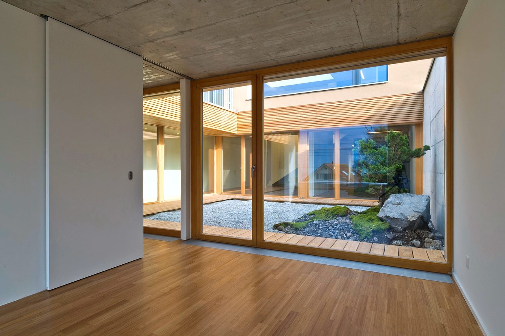
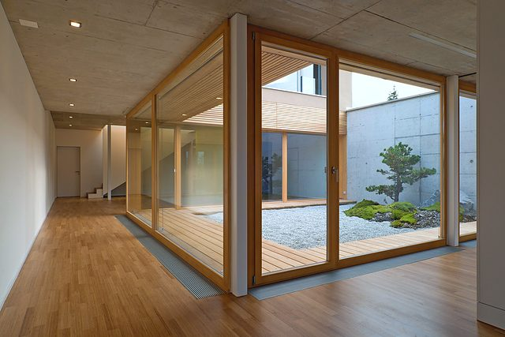
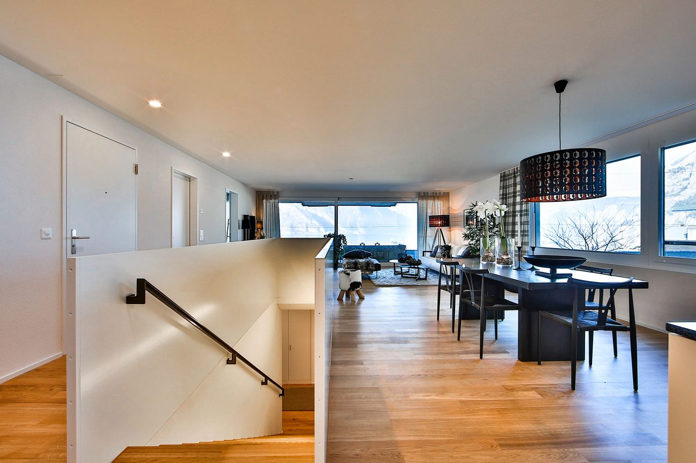
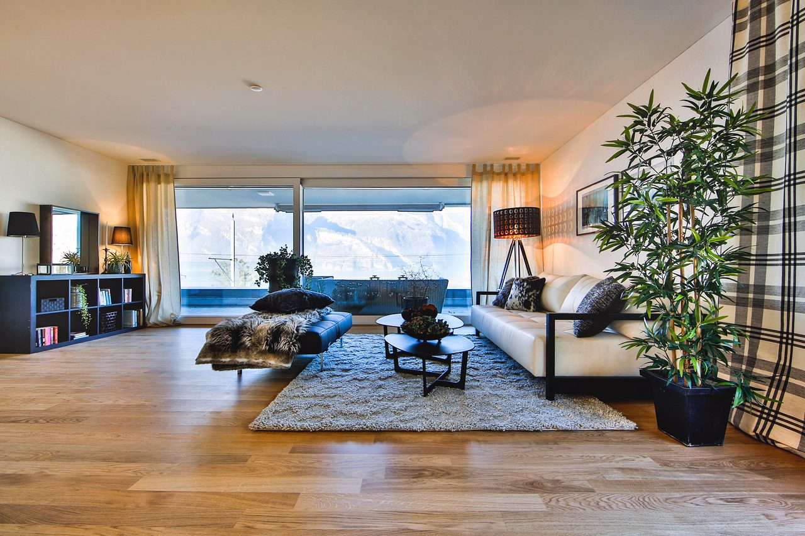
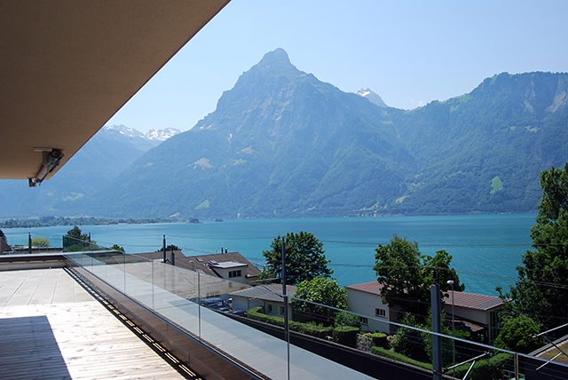
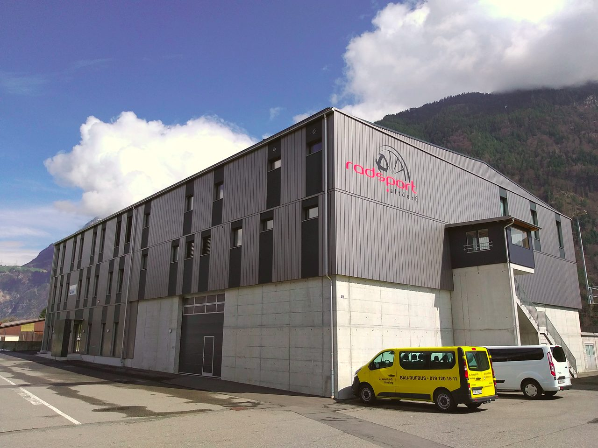
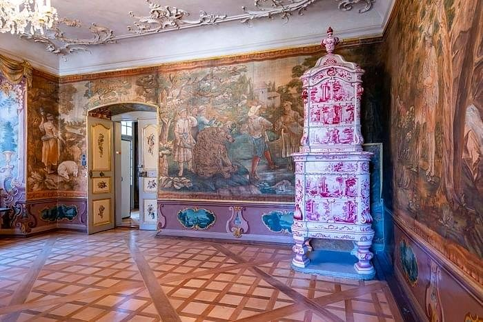

2008
Atriumhäuser
Flüelen · vermarktet mit Partnern


Konzeption, Entwicklung und Vermarktung von Immobilien, von Altdorf aus. Seit über 20 Jahren auf dem Immobilienmarkt tätig.

Projekte, die wir mit unseren Partnern vermarkten durften. Und das nächste, das hier entsteht.
2008
Flüelen · vermarktet mit Partnern


2015–16
Flüelen · vermarktet mit Partnern


2016
Altdorf, Giessenstrasse 46 · vermarktet mit Partnern

Herbst 2026
Altdorf, Werkmatt Baufeld 11 · zur Miete
Ein Foto gibt es noch nicht: Die Geschosse oben sind schematisch.
Herrengasse 1 · Preis auf Anfrage
Büros unter bemalten Decken und Kassetten aus Holz, ein Saal mit Kachelofen und Wandteppichen. Und, mit Baustart Herbst 2026 geplant, die Flächen im Businesspark Gotthard.
Besichtigung anfragen
Neue Wege bei Konzeption, Entwicklung und Vermarktung. Gesellschaftliche Tendenzen früh erkennen.
Seit über 20 Jahren auf dem Immobilienmarkt tätig. Büro am Kapuzinerweg 16 in Altdorf.
Sie suchen Fläche, haben ein Grundstück oder ein Projekt? Wir rufen Sie zurück.
Oder direkt: 041 874 72 24